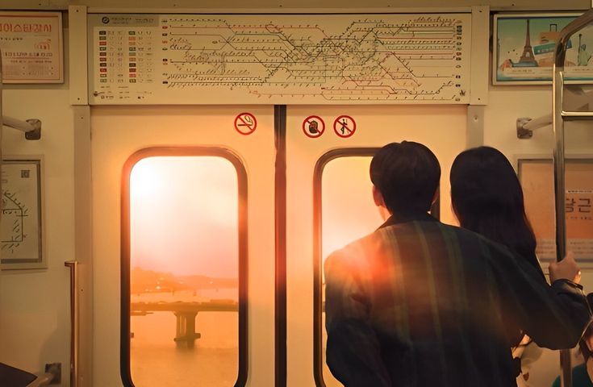

Personal

Nadiah Arsa Ghina Saragih adalah seorang individu yang lahir dan besar di kota yang berwarna dan bersejarah, Kota Medan. Sebagai anak pertama dari tiga bersaudara. Nadiah tumbuh dalam lingkungan keluarga yang penuh harapan akan dirinya. Nadiah suka hal hal yang memerlukan kreativitas seperti menggambar, lagu, dan lain sebagainya. Nadiah juga seorang individu yang sangat menyukai diskusi kelompok bahkan Nadiah juga sangat ingin menjadi seorang pemimpin dalam segala aspek
Pendidikan
Pendidikan Formal
Pengalaman
Bagi saya pengalaman semasa sekolah sangat penting untuk menambah skill dan mengasah kemampuan saya. Berikut ada beberapa pengalaman yang saya dapat dari semasa Sekolah saya
SMP Swasta Ikal Bulog
Menjadi Ketua Osis Periode 2022/2023
Saya Mendapat Pengalaman yang sangat berharga di masa SMP saya. Saya suka berdiskusi kelompok, memimpin, dan juga berbicara dengan banyak orang. Di SMP Swasta Ikal Bulog saya belajar banyak hal saat menjadi ketua osis periode 2022/2023. Karena bagi saya masa SMP adalah masa dimana kita menemukan jati diri kita dan saya bersyukur saya menemukan jati diri saya di tempat yang positif.
Saya juga mengikuti banyak kegiatan termasuk menjadi MC dalam event acara sekolah, mengikuti story telling baahasa inggris, dan mengikuti pembelajran di Bank Sumut bersama dengan teman teman seorganisasi saya dan bertemu banyak teman baru yang hebat.
Pada saat itu saya sukses menjadi pribadi yang mampu bersosialisasi, percaya diri, berani, dan tidak mudah menyerah walau rintangan saya sulit.
SMKN 9 Medan

Menempuh pembelajaran dengan jurusan Rekayasa Perangkat Lunak
Saat kelas 10 saya kurang aktif di sekolah dan hanya mengikuti pembelajaran sekolah saja. Namun di kelas 11 ini saya mampu keluar dari zona nyaman saya dan mulai mengikuti beberapa kegiatan di luar sekolah. Seperti mengikuti Seminar Online dari Sekolah Telkom, dan mengikuti beberapa lomba lainnya.
Saya juga mulai memahami secara mendalam tentang pemrograman web. Beberapa project dari sekolah sangat membantu saya mengembangkan skill saya dan saya akan terus berkembang menjadi lebih baik lagi.
Contact
Untuk Mengenal Lebih Lanjut dengan saya dapat dihubungi pada akun media sosial berikut ini :